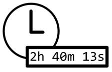

Prev - #10 Find and Replace | Table of Contents | Next - #12 Smallest & Biggest
getHoursMinutesSeconds(90) → '1m 30s'

Websites often use relative timestamps such as “3 days ago” or “about 3h ago” so the user doesn’t need to compare an absolute timestamp to the current time. In this exercise, you write a function that converts a number of seconds into a string with the number of hours, minutes, and seconds.
Exercise Description
Write a getHoursMinutesSeconds()
function that has a totalSeconds parameter. The
argument for this parameter will be the number of seconds to be translated into
the number of hours, minutes, and seconds. If the amount for the hours,
minutes, or seconds is zero, don’t show it: the function should return '10m' rather than '0h 10m 0s'.
The only exception is that getHoursMinutesSeconds(0)
should return '0s'.
These Python assert statements stop
the program if their condition is False. Copy them
to the bottom of your solution program. Your solution is correct if the following
assert statements’ conditions are all True:
assert getHoursMinutesSeconds(30) == '30s'
assert getHoursMinutesSeconds(60) == '1m'
assert getHoursMinutesSeconds(90) == '1m 30s'
assert getHoursMinutesSeconds(3600) == '1h'
assert getHoursMinutesSeconds(3601) == '1h 1s'
assert getHoursMinutesSeconds(3661) == '1h 1m 1s'
assert getHoursMinutesSeconds(90042) == '25h 42s'
assert getHoursMinutesSeconds(0) == '0s'
For
an additional challenge, break up 24 hour periods into days with a “d” suffix.
For example, getHoursMinutesSeconds(90042) would return '1d 1h 42s'.
Try to write a solution based on the information in this description. If you still have trouble solving this exercise, read the Solution Design and Special Cases and Gotchas sections for additional hints.
Prerequisite concepts: join(), append(), lists, string concatenation, while loops
Solution Design
One hour is 3600 seconds, one minute is 60 seconds, and one
second is… 1 second. Our solution can have variables that track the number of
hours, minutes, and seconds in the final result with variables hours, minutes, and seconds. The code subtracts 3600
from the totalSeconds while increasing hours by 1. Then the code
subtracts 60 from totalSeconds
while increasing minutes by 1. The seconds variable can then be set to whatever remains in totalSeconds.
After calculating hours, minutes, and seconds, you should convert
those integer amounts into strings with respective 'h',
'm', and 's' suffixes
like '1h' or '30s'. Then
you can append them to a list that initially starts as empty. Then the join() list method can join these strings together with a
single space separating them: from the list ['1h', '30s']
to the string '1h 30s'. For example, enter the
following into the interactive shell:
>>> hms = ['1h', '30s']
>>> ' '.join(hms)
'1h 30s'
The function then returns this space-separated string.
If you’re unfamiliar with the join()
string method, you can enter help(str.join) into the
interactive shell to view its documentation, or do an internet search for
“python join”.
Special Cases and Gotchas
The first special case your function should check for is if the totalSeconds parameter is set to 0. In this case, the
function can immediately return '0s'.
The final result string shouldn’t include hours, minutes, or
seconds if the amount of those is zero. For example, your program should return
'1h 12s' but not '1h 0m 12s'.
Also, it’s important to subtract the larger amounts first.
Otherwise, you would, for example, increase hours by
0 and minutes by 120
instead of increase hours by 2
and minutes by 0.
Now try to write a solution based on the information in the previous sections. If you still have trouble solving this exercise, read the Solution Template section for additional hints.
Solution Template
Try to first write a solution from scratch. But if you have difficulty, you can use the following partial program as a starting place. Copy the following code from https://invpy.com/hoursminutesseconds-template.py and paste it into your code editor. Replace the underscores with code to make a working program:
def getHoursMinutesSeconds(totalSeconds):
# If totalSeconds is 0, just return '0s':
if totalSeconds == ____:
return ____
# Set hours to 0, then add an hour for every 3600 seconds removed from
# totalSeconds until totalSeconds is less than 3600:
hours = 0
while totalSeconds ____ 3600:
hours += ____
totalSeconds -= ____
# Set minutes to 0, then add a minute for every 60 seconds removed from
# totalSeconds until totalSeconds is less than 60:
minutes = 0
while totalSeconds >= ____:
minutes += 1
totalSeconds -= ____
# Set seconds to the remaining totalSeconds value:
seconds = ____
# Create an hms list that contains the string hour/minute/second amounts:
hms = []
# If there are one or more hours, add the amount with an 'h' suffix:
if hours > ____:
____.append(str(____) + 'h')
# If there are one or more minutes, add the amount with an 'm' suffix:
if minutes > 0:
hms.append(____(minutes) + 'm')
# If there are one or more seconds, add the amount with an 's' suffix:
if seconds > 0:
hms.append(str(seconds) + ____)
# Join the hour/minute/second strings with a space in between them:
return ' '.join(____)
The complete solution for this exercise is given in Appendix A and https://invpy.com/hoursminutesseconds.py. You can view each step of this program as it runs under a debugger at https://invpy.com/hoursminutesseconds-debug/.
Alternate Solution Design
Alternatively, instead of subtractions in a loop you can use
Python’s // integer division operator
to see how many 3600 amounts (for hours) or 60 amounts (for minutes) fit into totalSeconds. To get the remaining amount in totalSeconds after removing the seconds accounted for
hours and minutes, you can use Python’s % modulo
operator.
For example, if totalSeconds were 10000, then 10000 // 3600
evaluates to 2, telling you that there are two hours
in 10,000 seconds. Then 10000 % 3600 evaluates to 2800, telling you there are 2,800 seconds left over after
removing the two hours from 10,000 seconds. You would then run 2800 // 60 to find the number of minutes in 2,800 seconds
and 2800 % 60 to find the number of seconds
remaining after removing those minutes.
Alternate Solution Template
Try to first write a solution from scratch. But if you have difficulty, you can use the following partial program as a starting place. Copy the following code from https://invpy.com/hoursminutesseconds2-template.py and paste it into your code editor. Replace the underscores with code to make a working program:
def getHoursMinutesSeconds(totalSeconds):
# If totalSeconds is 0, just return '0s':
if totalSeconds == ____:
return ____
# Set hours to how many times 3600 seconds can divide
# totalSeconds. Then set totalSeconds to the remainder:
if totalSeconds >= 3600:
hours = totalSeconds // 3600
totalSeconds = totalSeconds % 3600
else:
hours = 0
# Set minutes to how many times 60 seconds can divide
# totalSeconds. Then set totalSeconds to the remainder:
if totalSeconds >= 60:
minutes = totalSeconds // 60
totalSeconds = totalSeconds % 60
else:
minutes = 0
# Set seconds to the remaining totalSeconds value:
seconds = ____
# Create an hms list that contains the string hour/minute/second amounts:
hms = []
# If there are one or more hours, add the amount with an 'h' suffix:
if hours > ____:
____.append(str(____) + 'h')
# If there are one or more minutes, add the amount with an 'm' suffix:
if minutes > 0:
hms.append(____(minutes) + 'm')
# If there are one or more seconds, add the amount with an 's' suffix:
if seconds > 0:
hms.append(str(seconds) + ____)
# Join the hour/minute/second strings with a space in between them:
return ' '.join(____)
The complete solution for this exercise is given in Appendix A and https://invpy.com/hoursminutesseconds2.py. You can view each step of this program as it runs under a debugger at https://invpy.com/hoursminutesseconds2-debug/.
Prev - #10 Find and Replace | Table of Contents | Next - #12 Smallest & Biggest